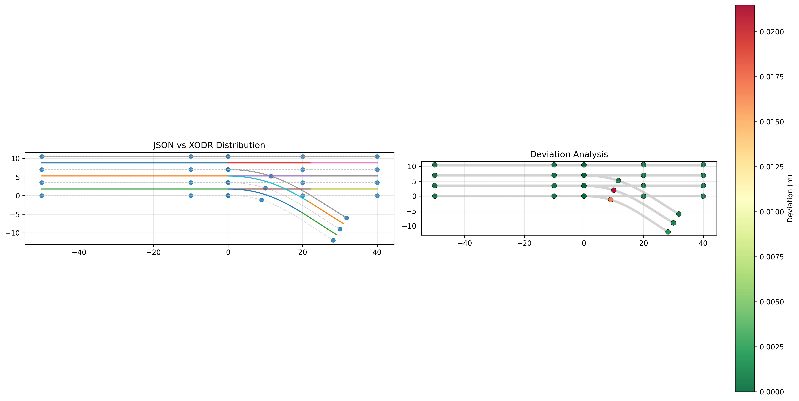

JSON → XODR 质检报告
生成时间：2025-08-27 16:33:42
JSON 文件：sample_objects.json
XODR 文件：sample_objects.xodr
摘要
完整性得分
100.0%
依据：车道/边界/物体/标识的数量对比
一致性得分
98.8%
依据：仅以 JSON 边界点到 XODR（参考线+车道边界）最近距离的平均偏移与阈值（0.100 m）比较
完整性检查
| 要素 | JSON 数量 | XODR 数量 | 子分数 |
|---|
| 车道（driving） | 8 | 13 | 1.00 |
| 边界（唯一ID vs 拓扑边界） | 11 | 13 | 1.00 |
| 标识（sign → signal） | 0 | 0 | 1.00 |
| 物体（objects） | 4 | 4 | 1.00 |
边界备注：唯一边界ID数 11；共有边界 5 个（ID: [2, 3, 6, 7, 10]）
说明：XODR 的数量可能大于 JSON，这是因为 OpenDRIVE 会将车道、标线按段落或属性拆分；只要不少于 JSON 即视为完整。
一致性检查
最大 / 最小偏移
0.021 / 0.000 m
参与点数
33
仅包含 JSON 中的边界点（objects 已忽略）
可视化（分布 & 偏移热力）

左图：参考线 + 车道中心线/边界 + JSON 点；右图：仅边界点偏移着色
匹配明细（前 200 条）仅 JSON 边界点
| 序号 |
类型 |
JSON 坐标 (x, y) |
最近 XODR 坐标 (x, y) |
偏移 (m) |
判定 |
| 0 | bound | (0.000, 10.500) | (0.000, 10.500) | 0.000 | ✅ Pass |
| 1 | bound | (-10.000, 10.500) | (-10.000, 10.500) | 0.000 | ✅ Pass |
| 2 | bound | (-50.000, 10.500) | (-50.000, 10.500) | 0.000 | ✅ Pass |
| 3 | bound | (-50.000, 7.000) | (-50.000, 7.000) | 0.000 | ✅ Pass |
| 4 | bound | (-10.000, 7.000) | (-10.000, 7.000) | 0.000 | ✅ Pass |
| 5 | bound | (0.000, 7.000) | (0.000, 7.000) | 0.000 | ✅ Pass |
| 6 | bound | (-50.000, 3.500) | (-50.000, 3.500) | 0.000 | ✅ Pass |
| 7 | bound | (-10.000, 3.500) | (-10.000, 3.500) | 0.000 | ✅ Pass |
| 8 | bound | (0.000, 3.500) | (0.000, 3.500) | 0.000 | ✅ Pass |
| 9 | bound | (-50.000, 0.000) | (-50.000, 0.000) | 0.000 | ✅ Pass |
| 10 | bound | (-10.000, 0.000) | (-10.000, 0.000) | 0.000 | ✅ Pass |
| 11 | bound | (0.000, 0.000) | (0.000, 0.000) | 0.000 | ✅ Pass |
| 12 | bound | (0.000, 10.500) | (0.000, 10.500) | 0.000 | ✅ Pass |
| 13 | bound | (20.000, 10.500) | (20.000, 10.500) | 0.000 | ✅ Pass |
| 14 | bound | (40.000, 10.500) | (40.000, 10.500) | 0.000 | ✅ Pass |
| 15 | bound | (0.000, 7.000) | (0.000, 7.000) | 0.000 | ✅ Pass |
| 16 | bound | (20.000, 7.000) | (20.000, 7.000) | 0.000 | ✅ Pass |
| 17 | bound | (40.000, 7.000) | (40.000, 7.000) | 0.000 | ✅ Pass |
| 18 | bound | (0.000, 3.500) | (0.000, 3.500) | 0.000 | ✅ Pass |
| 19 | bound | (20.000, 3.500) | (20.000, 3.500) | 0.000 | ✅ Pass |
| 20 | bound | (40.000, 3.500) | (40.000, 3.500) | 0.000 | ✅ Pass |
| 21 | bound | (0.000, 0.000) | (0.000, 0.000) | 0.000 | ✅ Pass |
| 22 | bound | (20.000, 0.000) | (20.000, 0.000) | 0.000 | ✅ Pass |
| 23 | bound | (40.000, 0.000) | (40.000, 0.000) | 0.000 | ✅ Pass |
| 24 | bound | (0.000, 7.000) | (0.000, 7.000) | 0.000 | ✅ Pass |
| 25 | bound | (11.500, 5.200) | (11.500, 5.200) | 0.000 | ✅ Pass |
| 26 | bound | (31.800, -6.000) | (31.800, -6.000) | 0.000 | ✅ Pass |
| 27 | bound | (0.000, 3.500) | (0.000, 3.500) | 0.000 | ✅ Pass |
| 28 | bound | (10.000, 2.000) | (10.021, 1.994) | 0.021 | ✅ Pass |
| 29 | bound | (30.000, -9.000) | (29.999, -9.000) | 0.001 | ✅ Pass |
| 30 | bound | (0.000, 0.000) | (0.000, 0.000) | 0.000 | ✅ Pass |
| 31 | bound | (9.000, -1.200) | (9.017, -1.202) | 0.017 | ✅ Pass |
| 32 | bound | (28.200, -12.000) | (28.199, -11.999) | 0.002 | ✅ Pass |
总计 33 条匹配记录；为避免过大，仅展示前 200 条。
告警列表（超过阈值的点）